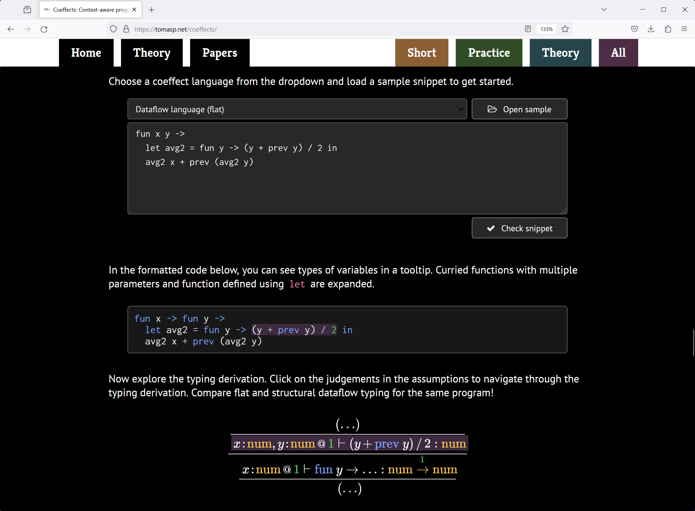
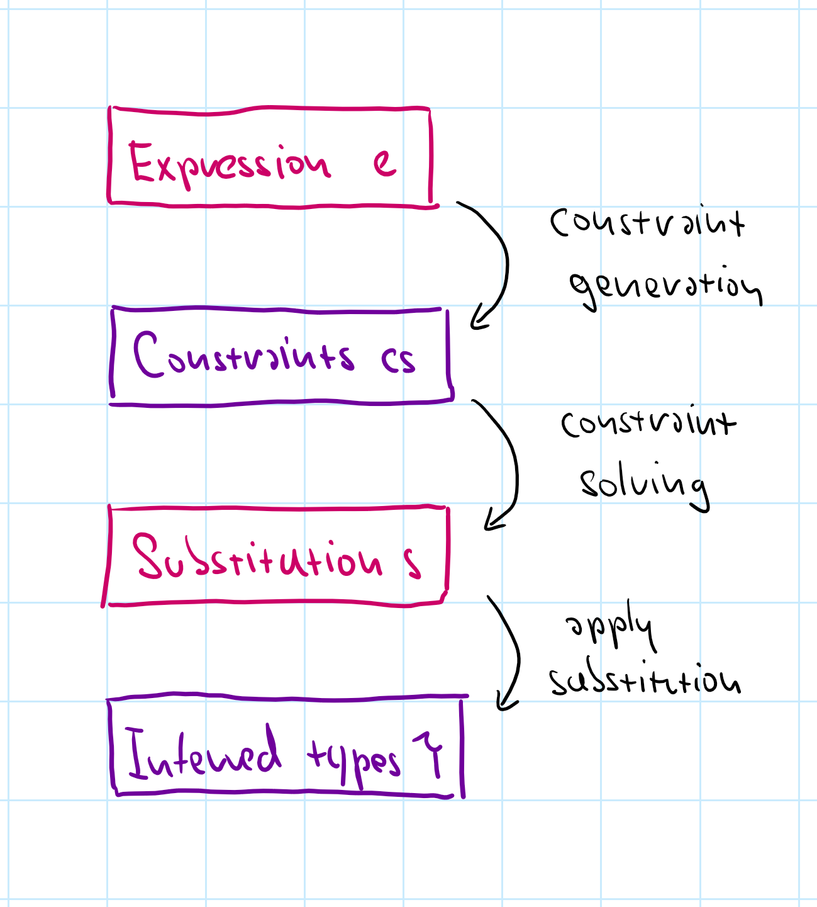

NPRG077
TinyHM: Tiny Hindley-Milner
type inference
Tomáš Petříček, 309 (3rd floor)
petricek@d3s.mff.cuni.cz
https://tomasp.net | @tomaspetricek
https://d3s.mff.cuni.cz/teaching/nprg077


Not a programming system!?
-
An important part of the ML experience
Makes ML practical and OCaml efficient -
Learn some subtle aspects of F# type inference
Some discovered late through proofs and errors -
Good example of constraint solving...
Important technique, used in Prolog & elsewhere

Origins of ML
LCF theorem prover
ML used for writing
meta-programs to generate proofs
Types used to ensure
the validity of proofs
Hindley-Milner
A brief history of type inference
- Hindley (1969) for Combinatory Logic
- Milner (1978) for ML with polymorphism
- Damas (1985) with formal analysis and proofs
- Since then - type classes, other extensions

ML type inference
How does F# figure out the types?
Demo
Basic type inference in F#
How F# type inference works

Constraint-based
- Collect & solve constraints
- No annotations needed for ML!
Let polymorphism
- Infer generic type of let-bound functions
Limitations in ML and F#
- Value restriction for generic values
- Harder to deal with .NET objects
Demo
Type inference limitations in F#
TinyHM
A bit of theory
Type systems

Typing rules
Given a typing context \(\Gamma\), the
expression \(e\) has a type \(\tau\)
The problem in general
We know some of these,
want to figure out the rest
Type systems

Type checking
- Know it all. Check derivation exists!
- Easy for syntax-driven rules
Type inference
- Know expression. Figure out the type!
- Ideally most general (best) type
Program synthesis
- Not typical setting, but for completeness...

Principal type (most general)
Best type of
an expression
Any other type of the expression is a special case (subtype) of it
Type inference
-
How Hindely-Milner type inference works?
Produces most general type (for ML) -
How Hindely-Milner type inference breaks?
Nominal types with members, interfaces, etc. -
Alternative methods for type inference
Bidirectional - combines checking and inference
TinyHM
Constraint generation & solving

Two phase process
Generate constraints
Recursively over expression
Solve constraints
Recursively over constraint set
In the "Algorithm W", the two are combined. We separate them!
(* Basic types with
type variables *)
type Type =
| TyNumber
| TyVariable of string
| TyFunction of Type * Type
| TyList of Type
(* Constraint specifies
that one type should be
unified with another *)
type Constraint =
Type * Type
What is a constraint?
A pair of types that
should be unified
Easy or impossible
int = int -> int
int list = int list
Tricky with variables
'a = int -> 'b
'a = 'c -> int
TinyHM
Constraint generation
- Generate type and constraints recursively
- Generate new fresh type variables as needed
- Variables with new type variables in context
- Most checking done via constraints
Sketch
Generating constraints
Constraint solver structure

Simplest possible example
- Peano numbers:
Zero,Succ(x) - Equality constraints with variables
- e.g.
Succ(x) = Succ(Succ(Zero))
Creating a solver
- Discharge matching constraints
- Fail on mismatching constraints
- Generate more for matching nested
- Needs to handle substitutions...
Demo
Solving numerical constraints

Remaining work
Substitution (#1) Replace variable in remaining constraints
Substitution (#2)
Apply substitutions
to assigned type
Occurs check (#3) Check for unsolvable constraints
Demo
Substitutions and occurs check
TinyHM
Inference code structure
(* All possible types you may
support: type variables,
primitives and composed *)
type Type =
| TyVariable of string
| TyBool
| TyUnit
| TyNumber
| TyFunction of Type * Type
| TyTuple of Type * Type
| TyUnion of Type * Type
| TyList of Type
| TyForall of string * Type
(* Types of known variables *)
type TypingContext =
Map<string, Type>
Types supported
Type variables
For constraint solving!
Primitive types
Match/mismatch
Composed types
Generate one or two new constraints
Polymorphic type
Forall (bonus)
(* Given a list of
constraints, produce a
list of substitutions *)
val solve :
list<Type * Type>
-> list<string * Type>
(* Given a typing context
(known variables) and
expression, return the type
of the expression and
list of constraints *)
val generate :
TypingContext
-> Expression
-> Type * list<Type * Type>
Type inference operations
Constraint solving
Takes constraints
Produces substitution
Constraint generating
Takes an expression
Produces constraints
Also check variables
Lab overview
Tiny Hindley-Milner step-by-step
TinyHM - Basic tasks
-
Complete the simple numerical constraint solver
Add the two missing substitutions to make it work! -
Solving type constraints with numbers and Booleans
Follow the same structure, but now for type constraints... -
Type inference for binary operators and conditionals
Add constraint generation for a subset of TinyML -
Supporting more TinyML expressions
Add let, functions, application and occurs check -
Adding simple data types
Constraint generation for tuples
TinyHM - Bonus & super tasks
-
Supporting more TinyML data types
Add type checking for discriminated unions -
Type inference for lists - poor method
Add recursion & units and try this on list code! -
Adding proper support for generic lists
New type, but without explicit type declarations -
Inferring polymorphic code for let bindings
Implementing proper Hindley-Milner let-polymorphism -
Exploring pathological cases
Did you know HM has DEXPTIME complexity?
Closing
Tiny Hindley-Milner type inference
Conclusions
Tiny Hindley-Milner type inference
- A remarkable quality of ML language(s)
- Cannot expect users to write types by hand!
- Nice introduction to constraint solving
- Much more can be done with this idea...
Tomáš Petříček, 309 (3rd floor)
petricek@d3s.mff.cuni.cz
https://tomasp.net | @tomaspetricek
https://d3s.mff.cuni.cz/teaching/nprg077